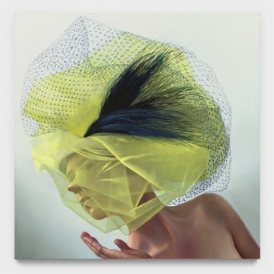
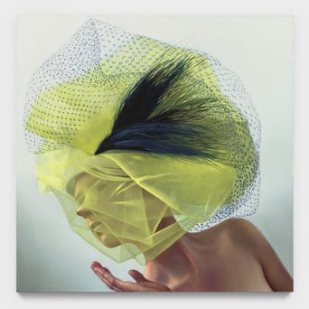

An Hour Before The He Falls
THE EXLLE 2nd floor
23 - 30 Juli, 2024

THE EXLLE dengan bangga mempersembahkan "an hour before he Fall" untuk pameran tahun 2024 pada tanggal 20-30 Juli di Hutan Kota Tangerang Selatan. Terpesona saat bertemu pada tatapan pertama, membuat setiap insan ingin merasakan nya, "an hour before he Fall" merupakan pemeran seorang seniman yang ingin mentelepati rasa yang pernah dikecap kepada para insan, pengamabilan kata "an hour" menandakan bahwa terkadang firasat dapat menentukan takdir, sementara kata "he" sendiri menggarisbawahi kurasi antara hawa yang sangat cermat, mengetahui, serta firasat yang sangat dalam terhadap adam. Menampilkan karya seorang seniman, “an hour before he Fall” menyoroti tema-tema yang secara konsisten muncul sepanjang perjalanan pameran THE EXLLE
 
